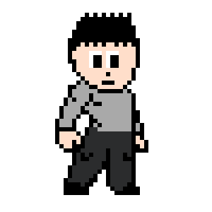

PROTA
Edad: 17

El personaje principal esta inspirado en un adolscente que sufre del "Trastorno de Ansiedad Social", los mapas que recorreras serán una creacion de este mismo, los enemigos son una clara referencia hacia los problemas existenciales que sufren las personas con este tipo de trastorno y en como debemos de ir superando estos obstaculos